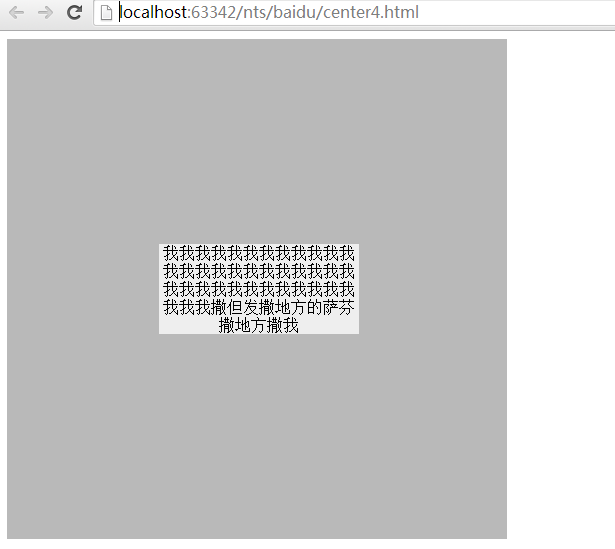

垂直居中问题，这里指的只是采用CSS方法，每次遇到都要头疼一番，面试题中也频频遇到，这里就总结一下。其实，目的很简单：将子元素在父容器中垂直居中呈现，如下图：  看起来很简单，但是由于浏览器兼容性和子元素是否可以指定高度上又有各种不适合的情况，下面，逐个来分析。
负外边距是最流行的一种方法，思路是将position设置成absolute或者reletive，先top:50%;left:50%;，然后再用margin纠正(左方向纠正多出来的子元素的宽度，右方向纠正多出来的子元素的高度)。
#container {
height: 500px;
width: 500px;
border: 1px solid #aaa;
position: relative;
}
#center {
height: 100px;
width: 200px;
background: #eee;
position: absolute;
left: 50%;
top: 50%;
margin-left: -100px; /*子元素的width的一半*/
margin-right: -50px;/*子元素的height的一半*/
}